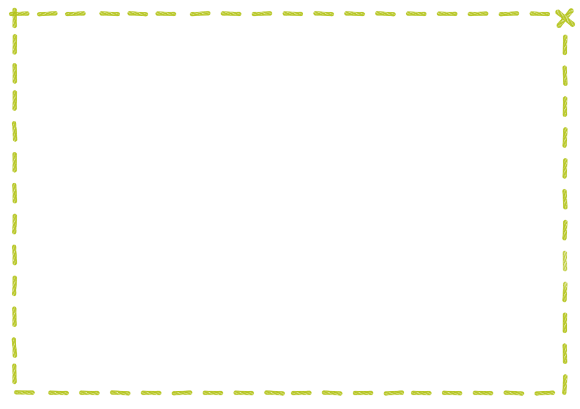
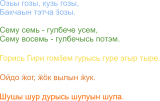

Одӥг гуртын кык пересьёс, кышноен картэн, улӥллям.нылпизы соослэн вылымтэ. Пересьмыса соос туж шуген, ёрмыса уло вылэм: куддыр шыд пӧзьтыны вылымтэ, куддыр гур аратыны чагзы вылымтэ… Огпол, ӵукна вазь султыса, кышноез картэзлы верам: - Султы но тэле ветлы, пересь… Гур аратыны чаг но ӧвӧл – кыӵе ке беризез кораса вай али! Картэз султэм но, тӥр кутыса, тэле кошкем. Ӧжыт гинэ тэле пыремно кыӵе ке но веськыт, чебер беризез адӟем. - Туж чебер беризь сюриз ук! Кышноелы кыӵе ке но усто чаг луоз ини! – шуэм но беризь доры мынэм. Кияз тӥрзэ кутыса, беризез ӵогыны шоналскем но, оломар адями куара пельсӧраз шуккиськем: - Эн кора монэ, пересь, эн иса… Со понна мон тыныд, мар ке курид, котьмар сёто. «Ма, кытысь таӵе куара кылӥське?» шуыса учкем пересь но, соин озьы беризь куаръёссэ каллен выретыса вераське вылэм. Туж кышкам пересь, туж куалектэм: тӥрез ик киысьтыз музэ усем. «Витьтон арес луытозь музъем вылын улӥ ни но – таӵе паймоно кадь ужез адӟеме ӧй вал на али» шуыса, пересь абдраса гуртаз бертэм. - Малы-о чагпистэк бертӥськод? – шуэм кышноез но тышкаськыны кутскем. - Эн тышкаськы, кышно. Мон чагпис корасал, дыр, но туж паймоно кадь уж шоры ӝими али. Тэльысь чебер беризь шедьтыса, кораны ӧдъясько вал ини но, беризь мыным адями кылын «эн кора монэ, пересь, эн иса, со понна мон тыныд, мар ке курид, котьмаро сёто» шуыса вераз. Со беризез жаляса мон коратэк ик кельтӥ, - пересь верам кышноезлы. - Э-э, визьтэм пуклёе! Татын мон гур аратыны но чаглы ёрмыса улӥсько, со ке, беризь шедьтыса, тэльысь чагпистэк бертэм. Али ик со беризед доры мын но солэсь одӥг ке но чагпис кур, - шуэм кышноез но пересьсэ нош икт эле улляса лэзем. Нош ик, тӥр кутыса, тэле кошкем пересь. Ӧжыт гинэ тэле пырыса вуэм но азьло веськыт, чебер беризез адӟем. - Беризе, чебер беризе, вождэ эн вайы мыным. Нош ик монэ кышное тэле улляз, тынэсьтыд одӥг ке но чагпис гур аратыны курыны косӥз, - шуэм пересь, беризьлы йыбырттыса. - Гуртад берт, пересь, эн сюлмаськы: кызьы куриськод, озьы ик луоз, - куаръёсыныз ӵаштыртыса верам пересьлы беризь. Пересь берытскем но гуртаз бертэм. Корказ пырем но… кышноез кыӵе ке но ӟеч чаг кесям. - Э-э, визьтэм пуклёе, визьтэм пуклёе! Витьтон арес улӥськод ини но – визьмыд ӧвӧл на! Татын мон гур эстыны пулы ёрмыса улӥсько, со ке чылкак одӥг гинэ чагпис курыса берытскем. Али ик со беризед доры мын но солэсь гур эстыны пузе кур! – шуэм кышноез но пересьсэ нош икт эле улляса лэзем, коркась донгаса поттэм. Нош ик, тӥр кутыса, тэле кошкем пересь. Ӧжыт гинэ тэле пырыса вуэм но азьло веськыт, беризьзэ адӟем. - Беризь, вождэ эн вайы мыным. Нош ик монэ кышное тэле улляз: тынэсьтыд гур эстыны пу курыны косӥз. - Гуртад берт, пересь, эн сюлмаськы, кызьы куриськод, озьы ик луоз, - куаръёсыныз ӵаштыртыса верам беризь. Пересь берытскем но нош ик гуртаз бертэм. Коркаез доры вуыны кутскем но – аслыз ачиз паймем: азбараз кыӵе ке но ӟеч пу вандылыса, пильылыса заборлэсь но ӝужыт тыремын. Пересез адӟыса, кышноез корка азяз гур суранэн бызьыса потэм. - Му пыр виян! Мушко йыр! Эгыр мешок! Витьтон ар музъем вылын улӥськод ини но, визьмыд кеньыр быдӟа но ӧвӧл на. Татын кем он нянь пыжыны пызьлы ёрмыса улӥсько, со ке гур эстыны пу гинэ курыса берытскем. Уно-а пайдаез пулэн? Путэк но улэммы луысал! Али ик со беризед доры мын но нянь пыжыны пызь кур! – шуэм кышноез но пересьсэ нош икт эле улляса лэзем, азбарысь донгаса поттэм, тыбыраз гур суранэн шуккем. Нош ик, тӥр кутыса, тэле кошкем пересь. Ӧжыт гинэ тэле пырыса вуэм но азьло веськыт, чебер беризьзэ адӟем. - Уно-а ма пайдаез пулэн? Путэк но милям улэммы луысал. Кышное тон доры пызь курыны косыса лэзиз. Ӧд ке сёты, куаръёстэ ыжпи сюдыны вениклы корало, шуэ! – беризьлы верам пересь. - Гуртад берт, пересь, эн сюлмаськы! Кызьы куриськод, озьы ик луоз! – куаръёсыныз җӵаштыртыса верам беризь. Пересь шумпотыса нош ик гуртаз бертэм. Азбараз пырем но, корказ пыратэк, пыр кеносаз мынэм. Кеносаз пырем но – паймыса мар вераны ик валамтэ: сусекъёсын, ларьёсын юг-юг мамык кадь пызь тыремын. - Однако та беризез… однако та беризез… мар ке вера, озьы ик луэ, - пересь ас понназ шумпотыса вераськыны кутскем. Кышноез карнанэн бызьыса потэм коркась. - Сӥньыс чырты, мушко йыр! Мар-о кариськод кенсын? Пыдыд сьӧрлань мед купырскоз вал!.. Уно-а пайдаез пызьлэн? Пызез сиёд но быроз. Витьтон ар ӵоже дуннеын улӥськод ини но – мушко йырад визьмыд ӧвӧл на. Тон беризьлэсь кык сандык зарнизэ кур вал. Мар-о жалянэз сое! Али икт эле мын но зарнизэ кур. Ӧз ке сёты, тӥрен ӵогыса, кораса кельто шуыса кышкаты! Кышноез пересьсэ нош ик тэле улляса лэзем, кеносысь донгаса поттэм, йыраз карнанэн шуккем. Нош ик, тӥрзэ кутыса, тэле кошкем пересь. Ӧжыт гинэ тэле пырыса вуэм но азьло веськыт, чебер беризьзэ адӟем. _ Уно-а пайдаез пызьлэн? Пызез сиёд но – пызь быроз. Тон милемлы кык сандык зарни сёт: кулытозямыы сюлмаськытэк, куректытэк мед уломы. Ӧд ке сёты, али ик тонэ тӥрен ӵогыса погырто! – беризь котыртӥ тӥреныз шоналляськыса ветлэм пересь. - Гуртад берт, пересь, эн сюлмаськы: кызьы куриськод, озьы ик луоз! – куаръёсыныз ӵаштыртыса верам беризь. Пересь шумпотыса нош ик гуртаз бертэм. Коркаез доры вуыны кутскем но – аслаз синъёсызлы оскымтэ: кышноез укно дураз пуке, зарниен жингыр но жильтыр гинэ пеш удэ. Корказ пырем но – синмыз ик мальдэм: кыказ сандыказ тросаз ик зарни чиляса улэ! - Быгатӥм, лэся, асьмеос беризез пӧяны. Табере кулытозямы чик куректытэк, чик сюлмаськытэк улом ини, - ваче вераськиллям пересьёс. Сандыкъёссэс мурӝолазы пыртӥллям, бадӟым замокъёсын замокаллям, корказэс, ӟезьызэс ӵогаллям. Нунал ортче, арня ортче… пересьёс уин уйбыт изёнэз уг адӟо: тани кин ке лыктоз, корказы пыроз, пересьёсыз тӥрен коралоз, зарнизэс нуыса кошкоз шуыса сюлмасько. Сюлмаськон интыязы сиён но сиемысь дугдӥллям… - Нош ик тэле беризед доры мын, пересь. Калык асьме доры пыраны мед кӧшкемалоз, кыдёкетӥ бызьыса мед кошкоз – озьы мед тупатоз беризед, - пересьлы верам кышноез. Нош ик тӥрзэ кутыса, тэле кошкем пересь. Ӧжыт гинэ тэле пырыса вуэм но азьло веськыт, чебер беризьзэ адӟем. - Беризь, ми доры калык пыраны мед кышкалоз, милесьтым мед кӧшкемалоз – озьы тупаты. Уйбыт кышноеным ум изиське, воръёс лыктэмлэсь кышкаськом, - беризьлы верам пересь. - Гуртад берт, пересь, эн сюлмаськы: кызьы куриськод, озьы ик луоз. Калыкъёс гинэ ӧвӧл, кионъёс но тӥлесьтыд кӧшкемалозы, - верам беризь. Пересь берен гуртаз бертэм. «Мар-о таӵе паймоно кадь кылъёс вераз али беризь: малы милесьтым кионъёс но кӧшкеманы кутскозы?» - малпаськыыса бертэм пересь. Гуртаз вуэм, азбараз пырем. Корказ пырыны ӧссэ усьтэм но, со шоры кышноез омырскем но – соку ик мар ке быдӟа гондыр луэм. Пересь туж куалектэм, музэ усем но – ачиз но соку икт уж бадӟым шӧтэм гондыр луэм. Озьы дунне вылэ гондыръёс кылдӥллям.
В одной деревне жили-были старик со старухой. Детей у них не было. Жили они в большой нужде. Печь топить — дров нет, кашу варить — крупы нет. Собрал как-то старик поленьев на одну топку, а разжечь нечем — лучины нет. Старуха говорит: — Сходи-ка, старик, в лес за лучиной. Свалишь одну березу — лучины на год хватит. Старик взял топор и пошагал в лес. Долго ему искать не пришлось, только зашел в лес, сразу увидел красивую березу. «Ну, старуха, славную лучину нашел», - подумал он. Подошел ближе, осмотрел березу кругом и замахнулся. Только хотел опустить топор, как листья березы зашелестели, береза нагнулась и заговорила человеческим голосом: — Пожалей меня, старик, не руби. А что тебе надо, — все будет. Старик испугался, даже топор из рук выронил. — Шестьдесят лет живу, а такого чуда не видывал, — подумал старик. Березу он не тронул. Вернулся домой и говорит старухе: — Я принес бы тебе лучины, да береза начала просить: «Пожалей меня, старик, не руби. А что тебе надо, все будет». Ну, я и послушался. Старуха говорит: — Раз лучины она для нас пожалела, иди ломай ее ветки, ягнятам корм будет! — И прогнала старика обратно в лес. Старик сразу увидел красивую березу, подошел к ней, поклонился и стал просить: — Дай, береза, лучины. Если не дашь, жена приказала твои ветки ломать и листочками ягнят кормить. — Не кручинься, старик, иди домой. А что просишь, то будет, — говорит береза. Бедному старику делать нечего, пошел обратно. Пришел домой и удивился: как много нащепала жена лучины! Старуха увидела его, давай ругать: — Почему только лучины просил? Ведь дров нет, печь топить нечем. Ступай проси дрова! — Поругала, покричала и выгнала старика из дому. Старик взял топор и пошел в лес. Дошел до березы, поклонился и стал просить дрова. — Иди, старик, домой, а что просишь, то будет, — говорит береза. Старик пошагал домой. Зашел во двор и удивился: полон двор распиленных дров. А старуха опять недовольна: — Почему только дров просил? Ведь у нас и муки на хлеб нет. Ступай попроси муки! — Схватила ухват и выгнала беднягу из дому. Старик взял топор и снова в лес. Дошел до березы, поклонился и стал причитать: — Красавица береза, старуха опять послала меня к тебе просить муки. Если можешь, помоги. — Иди, старик, домой, что просишь, то будет, — ласково сказала береза. Старик обрадовался и пошагал домой. Вернулся он, зашел в амбар. Не верится ему, что у них будет мука. Подошел к сусекам — все сусеки полны мукой! Старику стало так легко, весело, что забыл он прежнее горе. Старуха, увидев его, выбежала из дому и принялась ругать: — Старый черт, деревянная голова, почему только муки просил! Иди проси два сундука золота! — Ударила его коромыслом и выгнала со двора. Бедный старик, повесив голову, пошел в лес. Увидел березу, поклонился и стал причитать: — Красавица береза, старуха опять послала меня к тебе, требует два сундука золота. — Иди, старик, домой, что просишь, то будет, — сказала береза. Старик вернулся. Стоит под окном и видит: жена играет золотыми монетами. Зашел в дом — два сундука полны золотом! — Надо спрятать золото, — говорит старуха. Поговорили, подумали и спрятали золото в подполье. Вот живут старик со старухой. Довольны, что денег много. Но золото не дает им покоя ни днем ни ночью. Боятся, как бы кто не стащил сундуки. Старуха говорит: -Иди, старик, к березе, попроси у нее что-нибудь страшнее, чтобы, увидев, все люди боялись. Пришлось старику опять шагать в лес. Увидел он красивую березу, поклонился и стал просить: — Пошли нам что-нибудь страшное, чтобы все люди боялись, наше золото не трогали. — Иди, старик, домой, что просишь, то и будет. Будут бояться не только люди, но и всякие звери - сказала береза. Вернулся старик домой, открыл дверь и… старуха бросилась на него. Оба упали, вдруг заревели и превратились в медведей. Так появились медведи.